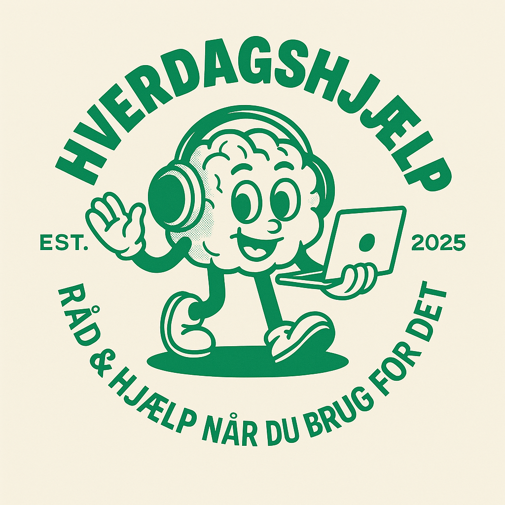
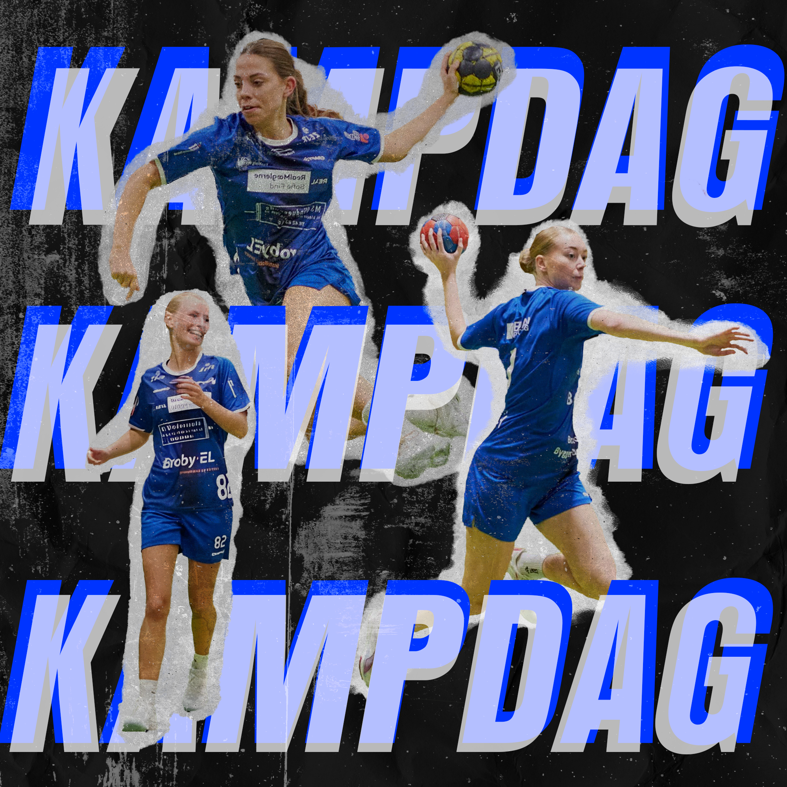
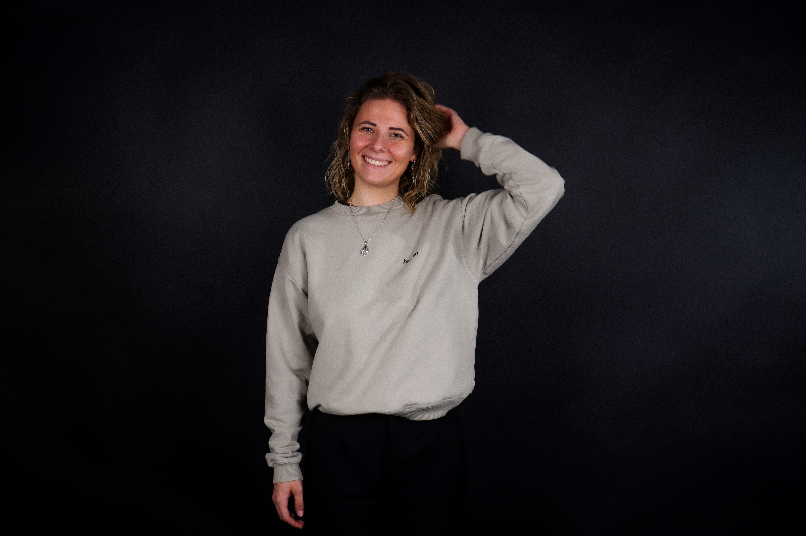
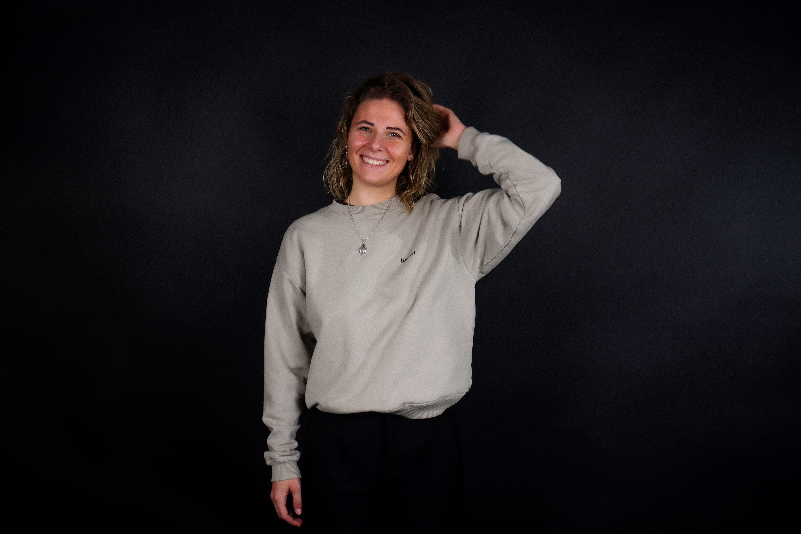

Branding
Visuelle identiteter der fortæller historier og skaber forbindelse – fra logo til et lille, sammenhængende univers.
Grafisk designer fra Færøerne med rødder i Island.
Jeg kombinerer nordisk minimalisme med rå visuel identitet. Inspireret af dramatiske landskaber, håndbold, musik og menneskerne omkring mig.
Ingrid – 2025
Visuelle identiteter der fortæller historier og skaber forbindelse – fra logo til et lille, sammenhængende univers.
Layout til print og digitalt med fokus på typografi, komposition og et tydeligt visuelt udtryk.
Stemningsfulde billeder fra Nordatlanten og redigering der understøtter fortællingen.
Et udsnit af opgaver og projekter – se den fulde oversigt på projektsiden.
Branding
Et venligt logo og et lille univers med varme farver og genkendelighed.
Branding · Billedbehandling

Retouch, farver og et lille gåse-element for at ramme stemningen.
Animation
En kort, legende animation lavet til SoMe – simple bevægelser og timing.
Layout · SoMe
Stærke kontraster, rytme og typografi der fanger opmærksomhed hurtigt.
2023 – nu
Arbejder med grafisk design, foto, UX og front-end udvikling. Projekter med fokus på branding og visuelle fortællinger.
Før 2023
Erfaring med teamwork, ansvar og at skabe oplevelser for andre – både på og uden for banen.
Photoshop
Illustrator
InDesign
Figma
Typografi
Branding
“Design handler ikke kun om, hvad du ser – men hvordan det får dig til at føle.”
Jeg er Ingrid – en visuelt drevet multimediedesigner med rødder på Færøerne. Jeg arbejder med branding, layout og illustration, hvor personlighed, stemning og funktion mødes.
Jeg er ikke drevet af hurtige løsninger, men af fordybelse og nysgerrighed. Når jeg arbejder med et projekt, går jeg ind i det med ambitionen om at forstå både idéen, konteksten og menneskene bag – og bliver ved, indtil det hele klikker.
Mine idéer opstår ofte ude i verden, hvor farver, former og detaljer sætter noget i gang. Den færøske blanding af rå natur, gamle huse og moderne byliv former mit visuelle blik og giver mine projekter en kant, der både er personlig og visuel.
 

Jeg er vokset op med håndbold. Tempo, fokus og samarbejde er ikke bare sport for mig – det er måden, jeg arbejder på.
Den energi tager jeg med ind i mit designarbejde. Jeg ser sport som bevægelse, rytme og dynamik, og netop de elementer bruger jeg ofte, når jeg arbejder med form, komposition og visuelle udtryk.


Har du et projekt, en idé eller bare lyst til at sige hej? Skriv til mig.
E-mail: KleinDesignGrafik@gmail.com
Lokation: Færøerne · Danmark